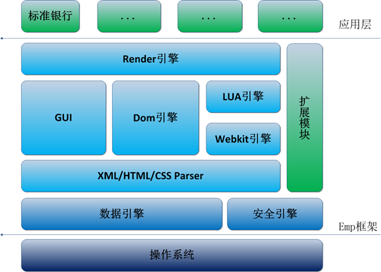
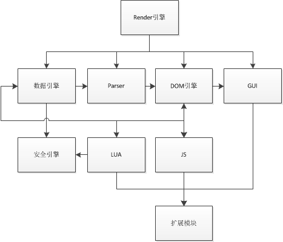
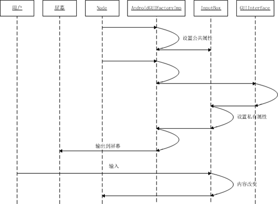
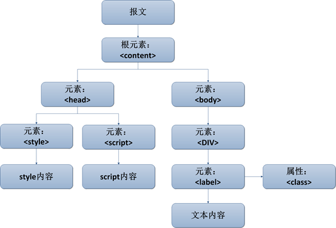
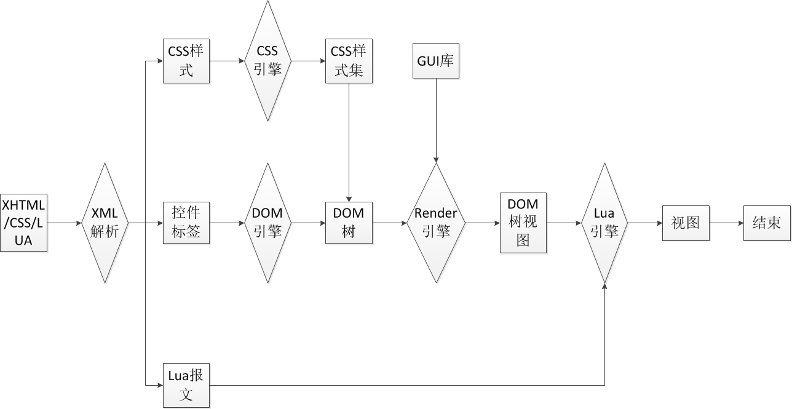
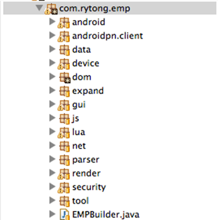
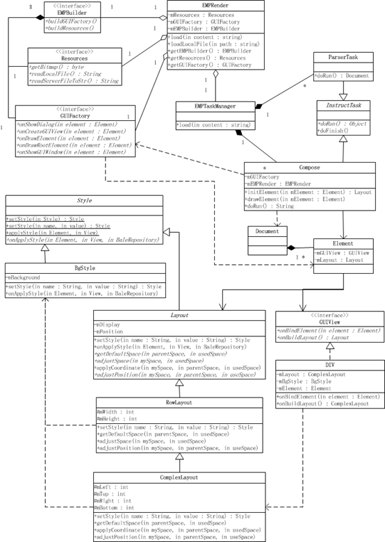
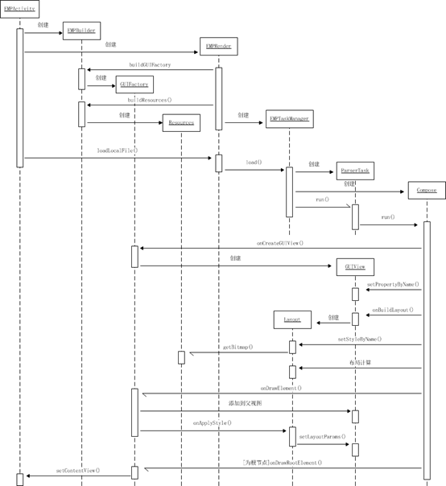

EMP5.1的android框架是在j2me框架的基础上修改的，而j2me框架的一些特点并不适合于android开发，特别是没有充分利用android开发平台的开发特性。其次5.1的android平台在稳定性、适配、运行效率、容错等功能均不够好。
平台架构模块划分不够清晰、封装不够紧密：
类层次结构、模块接口定义不清。如：Component抽象类中包含众多子类实现。如下列代码，reSetTextViewLayoutParams、mouldTextView等方法都是处理TextView逻辑的。
public abstract class Component {
protected void reSetTextViewLayoutParams() {
TextViewmlpl = (TextView) realView_;
Paint paint = mlpl.getPaint();
...
}
/**
* 依据Css样式，设置TextView类控件的相关属性
*/
private void mouldTextView() {
...
}
}
以上问题对与代码阅读理解、bug修改、功能扩展都有很大影响。
大量逻辑处理封装在UI线程中，这种方式及容易引起“应用程序无响应”。如下述代码中在UI线程先后执行了排版算法（mouldAndLayout（）），LUA脚本，LUA垃圾回收。
public class AtomParser extends DefaultHandler {
...
public void endDocument() throws SAXException {
activity_.runOnUiThread(new Runnable() {
@Override
public void run() {
xmlToView(ComponentCopy.CC, null);
if (parseType_ == ENTIRE) {
if (null != ComponentCopy.COMPONENT)
ComponentCopy.COMPONENT.mouldAndLayout();
} else {
if (null != ComponentCopy.COMPONENTPARTLY)
COMPONENTPARTLY.mouldAndLayout();
}
...
synchronized (this) {
for (inti = 0; i< size; i++) {
scriptText = stack_.get(i).toString();
index = Component.LUASTATE.LdoString(scriptText);
...
}
}
Component.LUASTATE.gc(LuaState.LUA_GCCOLLECT, 0);
...
}
});
}
}
报文布局与系统UI布局掺杂一起逻辑较乱，产生较多bug，不利bug修改且修改对全局影响较大。
在LUA、JS注入的对象中存在大量重复对象，造成内存负担。
public class LuaScreen {
publicLuaScreen() {
try {
Component.LUASTATE.pushObjectValue(this);
Component.LUASTATE.setGlobal("luascreen");
String luahead = "screen = {}; ";
Stringluafc1 = "function screen:reflash()
luascreen:reflash(); end;";
String luafc_width = "function screen:width() local width = luascreen:width(); return width; end;";
...
Component.LUASTATE.LdoString(luahead.concat(luafc1).concat(luafc_width));
} catch (Exception e) {
Utils.printException(e);
}
}
/**
* @param L
*/
public void reflash() {
...
}
}
Component.LUASTATE.pushObjectValue(this);Component.LUASTATE.setGlobal("luascreen");就是向LUA中注入当前LuaScreen对象方法，LUA中即可用luascreen.reflash()访问改方法，但后面又用LUA脚本注入screen对象执行的同样是luascreen.reflash()方法。网络引擎在效率与稳定上还有问题，如平凡访问ResponseCode值会出现-1状况或HttpURLConnection.getOutputStream（）时报出bad file number！IO异常。
在重构中针对1.1描述问题解决方法如下：
优化LUA、JS注入对象、流程、垃圾回收等方法。
LUA实现方式：
1）对C++ LUA进行jni封装。
2）使用LuaJava代码示例：
public class Screen {
public Screen() {
Component.LUASTATE.pushObjectValue(this);
Component.LUASTATE.setGlobal("screen");
}
public void refresh(){
}
}
上述代码即可注入screen对象，LUA中可直接用screen:refresh()访问
JS代码示例：
public class Screen {
public Screen() {
}
public void refresh(){
}
}
WebView web = new WebView（）；
web.addJavascriptInterface(new Screen(), “screen”);
同上所述，JS中即可用screen.refresh()回调到Java中对象方法。
对HttpURLConnection与HttpClient进行效率与稳定综合对比，选中更优者进行封装。

EMP Android平台架构如上图所示。
浅蓝色与蓝色为架构内核，由产品负责维护与升级。
绿色为APP与扩展模块，由应用层确定其功能与实现。扩展模块为架构内核提供GUI、LUA、JS扩展接口组成，用以支持应用的定制需求。
由html、lua、js等脚本语言编写而成。支持本地应用、互联网应用或两者结合应用。
EMP框架又分为数据模块、逻辑模块和扩展模块。数据模块与逻辑模块为产品框架核心；扩展模块为不同应用定制需求提供支持；模块关系见下图。
由于平台特性与browser非常相似，此框架设计参照browser并对其进行适应性的修改与添加。

根据系统信息构建并初始化EMP基本运行环境以及所需数据。
提供EMP平台入口，黏合各功能模块。攘括排版引擎，根据DOM树结构以及样式属性对UI布局进行排版并关联GUI库完成界面绘制。对DOM树结构、属性等进行监听并适时刷新、替换界面。在界面与DOM引擎间进行事件转换、传递。
作为EMP与操作系统连接桥梁，负责EMP与系统特性间方法、数据的匹配与转换。
遍历DOM树，依据树结构以及节点属性、样式进行排版。
图形用户界面（Graphical User Interface，简称GUI，又称图形用户接口）库，根据报文节点对Android系统图形界面对象进行相应扩展组建GUI库，供Render引擎界面绘制。
实现事件监听，使其支持DOM EVENT接口。从而完成按键事件功能逻辑。
GUI库中界面对象类尽可能使用系统原生API，减少UI类中算法与逻辑处理提高响应效率。
定义GUIFactroy抽象类，提供GUI绘制接口。
定义AndroidGUIFactroy继承GUIFactory类，功能扩展如下：
Android LayoutParams对象中的LayoutParams.x、LayoutParams.y、LayoutParams.width、LayoutParams.height。对私有属性，定义如下接口类：
public interface GUIInterface {
public void setNodeInfo(Node parent, Node child);
}
将节点信息设置入其实现者，完成节点属性key与value到Android View属性方法转换。如：
public InputBox extends EidtText implements GUIInterface{
private Element mElement = null;
public void setNodeInfo(Node parent, Node child){
mElement = (Element) child;
String value = element.getAttribute(“value”);
setText(value);
}
@Override
protected void onTextChanged(CharSequence text, int start, int lengthBefore, int lengthAfter) {
mNode.setAttribute(“value”, text);
}
...
}
实现GUI扩展接口，以对DOM树增加节点提供支持。

GUI时序图说明如下：
文档对象模型（Document Object Model简称DOM），集合报文DOM树（见图）、EMP功能对象库两大模块。
作为报文、LUA、JS等与系统、视图之间的连接桥梁。

根据报文中节点属性以及等级关系创建DOM树（如上图）结构。支持通过DOM访问DOM树中每个节点，并可以添加、移除、改变或重构整颗DOM树。
创建功能类库，给LUA、JS等脚本获取系统信息、访问DOM树等等提供支持。
具体类实现如：
Document.getElementsByName()返回与指定的所有属性匹配的所有控件对象。Screen.width返回屏幕宽。Screen.height返回屏幕高。等等具体对象、方法可参考HTML DOM相关文档。
LUA引擎分黏合层、JNI层、LUA内核层三部分。
Webkit引擎分JS模块与WebView模块。
结合平台特性，在此采用DOM为报文解析器，实现XML、HTML、CSS等报文解析并根据节点属性构建DOM树。
对解析过程进行跟踪，能定位报文错误位置并进行alert显示。
解析流程如下：

作为EMP android平台框架的扩展，由GUI、LUA、JS等模块提供扩展接口组成。实现在框架中没有定义或超出定义的控件以及功能逻辑模块。
对框架所需数据进行统一封装，分为本地数据与网络数据两种类型；并负责连接安全引擎实现适时对数据进行加解密。
根据Android存储方式性能比对，较大数据量读写操作如“图片”等，文件系统方式远比数据库方式快；但数据结构较复杂时，文件系统操作复杂且效率不高；因此综合考虑本地数据存储方式如下：
以上方式均得考虑对过期数据进行删除清理。
提供sd卡、数据库、文件读写接口，以便LUA、JS进行访问。
HttpURLConnection与HttpClient对比见下表，实现HttpClient引擎封装，使其支持WIFI、NET、WAP等网络连接方式；异步与同步网络处理流程；GET与POST请求类型。
| URLConnection | HTTPClient | |
|---|---|---|
| Methods | Only HEAD, GET, POST, PUT, DELETE, TRACE and OPTIONS. | Has HEAD, GET, POST, PUT, DELETE, TRACE and OPTIONS, plus any arbitrary method, such as those from WEBDav and IPP. |
| Response Codes | The response code, headers, and body can only be read if the response code was less than 400 - for any 4xx or 5xx response code, you only get IOException's when trying to get any response info. | The response code, all headers, and the body can always be read normally. |
| Proxies and SOCKS | Full support (SOCKS: Version 4 only) | Full support (SOCKS: both version 4 and 5) |
| Authorization | Support for Basic and an early version of Digest in JDK 1.2 or later, only. The current version of Digest authentication (which is the one supported by most servers) is not supported, and due to a bug of theirs they won't even recognize the digest info returned by Apache. | Support for Basic and Digest Authentication; other schemes can be added. |
| Cookies | No. | Yes. |
| True request output streams | No - all data is fully buffered before it is sent. | Yes - HttpOutputStream will stream directly to the socket. |
| True response input streams | Under JDK 1.2, yes; under JDK 1.3 only if the response is not sent using the chunked encoding (this excludes most server-push responses). | Yes. |
| Persistent Connections | HTTP/1.0 Keep-Alive's in JDK 1.1 and JDK 1.2; JDK 1.3 has HTTP/1.1 persistence. | Supports HTTP/1.0 Keep-Alive's and HTTP/1.1 persistence. |
| Pipelining of Requests | No. | Yes. |
| Can set Timeouts | No. | Yes. |
| Can handle protocols other than HTTP | Yes (e.g. ftp, gopher, mailto, and file are provided) | No. |
| Can do HTTP over SSL (https) | Appropriate SSL package (such as JSSE) which provides an appropriate client must be installed. | Patches are available for various free and commercial SSL packages |
| Source code available | No. | Yes. |
安全引擎包括加密信道、加密库两模块。
加密信道，封装加解密算法以及调用HTTP引擎，实现网络信道加密。
加密库，实现加解密接口，提供数据安全支持。

为主包名，下可放置构建器与接口。
Android 相关如：Activity、AndroidEMPBuilder
数据包，放置数据模块相关类库并根据子模块建立子报名。
设备相关如：GPS。
DOM引擎包，由于解析采用DOM方式，因此省去DOM树结构类库。该包下放置封装好的Library类库，供LUA、JS等脚本调用。
GUI包，放置对Android view等封装类。
JS引擎包，放置JS封装的java类。
LUA引擎包，放置LUA封装的JAVA类及JNI。
报文解析包，放置报文解析类。
Render引擎包，Render相关模块及排版引擎。
安全包。
工具包。

